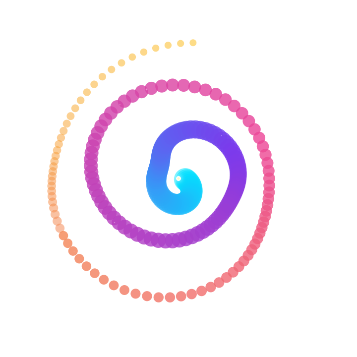

One 是面向个体创业者的 AI 公司操作系统。一人公司，AI 团队——AI 员工替你执行，你只做决策。 One is the AI Company OS for solo entrepreneurs. AI employees handle execution; you make the decisions.
支持 macOS · Windows · Linux Supports macOS · Windows · Linux
curl -fsSL https://one.cloudkey.top/install | bash
npm install -g @one/cli
bun add -g @one/cli
brew install one-cli
平台一封，百万粉丝归零。那不是生产资料，那是租来的摊位。真正的生产资料，是一套属于你自己的、可持续运转的生产系统——从内容产出、分发触达到复盘迭代，闭环掌控在自己手里。 A platform ban zeros out millions of followers. That's not a means of production — it's a rented stall. Real assets are your own closed-loop production system.
每次对话都从零开始。花了几周调试的上下文，关掉窗口就全部归零。这不叫智能体，这只是一台复读机。 Every conversation starts from zero. The context you spent weeks fine-tuning vanishes when you close the window. That's not an agent; it's a repeat machine.
One + CC Switch = 一个方案，调用所有主流模型。Claude、GPT、Gemini、Kimi、DeepSeek……按需切换，成本直降 80%。 One + CC Switch = one plan, all major models. Claude, GPT, Gemini, Kimi, DeepSeek... Pay once, use them all. Cut AI costs by 80%.
程序员用 AI 写代码，市场部做方案，HR 筛简历，客服回消息——每个环节都在用。但经营效率没变。自由设计师出图快了，报价不变；自媒体人写稿快了，账号不变。AI 像给自行车装了个电动马达——踏板转得快了，但车还是那辆车。 Devs code with AI. Marketers draft, HR screens, support replies—every function uses it. But business efficiency stays flat. Freelancers generate faster, but rates stay the same. Creators write faster, but their accounts stay the same. AI is like an electric motor on a bicycle—pedals spin faster, but you're still on the same bike.
企业 AI 落地困境的核心在于那些说不清道不明的经验（默会知识）难以被 AI 处理，而非模型、算力或数据不足。 The real barrier to enterprise AI adoption isn't models, compute, or data—it's tacit knowledge that can't be written down.
解法是构建"知识飞轮"——让系统里明明白白的数据（骨架）和人脑子里说不清道不明的东西（肌肉），在同一个结构里汇合。 The solution is a "Knowledge Flywheel"—where explicit data (skeleton) and tacit wisdom (muscle) converge in one structure.
目标：激活沉睡的数据，外化个人的经验，共同驱动智能化的业务决策。 Goal: Awaken dormant data, externalize personal experience, and together drive intelligent business decisions.
AI 应用局限于优化局部环节（写代码、写文案、筛简历），没有改变整体运行方式。提升的是个人效率，不是经营效率。 AI optimizes isolated tasks—writing code, drafting copy, screening resumes—without changing how the business operates. Personal efficiency up, business efficiency flat.
企业存在两套系统：数据库里明明白白的数字（订单、客户、财务），和人脑子里说不清的东西（经验、直觉、判断）。AI 擅长处理数据，但啃不动那些真正决定输赢的东西。 Every organization has two systems: databases with explicit numbers (orders, customers, finances) and people's heads holding tacit knowledge (experience, intuition, judgment). AI handles data well, but can't touch what actually decides outcomes.
解法不是建更大的工具，而是让知识持续流动、积累、进化。One 做的就是这个——每个智能体既是知识的加工方，也是使用方。打通这两个角色，知识就从一个"锁在人脑里的资产"变成一个自我增值的系统。 The answer isn't a bigger tool—it's making knowledge flow, accumulate, and evolve. That's exactly what One does—every agent is both a knowledge producer and consumer. Bridge these two, and knowledge transforms from a locked asset to a self-appreciating system.
骨架：系统里那些明明白白的数据（订单、客户、报表）——提供准确性与完整性。肌肉：人脑里的判断力、直觉、手感——提供灵活性与决策力。One Memory 把两者存在同一个知识图里，不分家。 Skeleton: explicit data in your systems—orders, customers, reports—providing accuracy. Muscle: judgment, intuition, instinct—providing flexibility. One Memory stores both in the same knowledge graph, not separate systems.
AI 擅长前三层，企业竞争力在后两层。One 的知识飞轮打通从"数据"到"决策"的全链路。 AI excels at the first three layers. Business competitiveness lives in the last two. One's Knowledge Flywheel bridges the full chain.
数据骨架 + 经验肌肉，在 One Memory 里汇合，由自进化引擎持续推动。不是两个东西拼在一起——从设计之初就是一个东西。无论你是一个人的创作者，还是正在搭建团队，你的知识都值得一个能持续运转的系统。 Data skeleton + experiential muscle, converging in One Memory, driven by the self-evolving engine. Not two things bolted together—designed as one from the ground up. Whether you're a solo creator or building a team, your knowledge deserves a system that keeps it running.
每一次决策、红线与运营偏好都写入长期记忆底座。支持记忆胶囊一键导入/导出，从“记忆商城”获取行业成熟认知包。 Every decision and compliance boundary is written to long-term memory. Supports one-click import/export of cognitive capsules from the Memory Mall.
一套系统同时包容多智能体协同运行，支持在前端单界面进行多视窗分屏显示，实时监控各智能体思考流与执行日志。 Accommodates multiple concurrent agents in one system, supporting split-screen visual flows in a single window to monitor thinking and logs side-by-side.
深度整合 OpenCLI 浏览器自动化，能够模拟人类打字停顿、随机悬停和平滑滚动，跨 100 多个平台安全采集商业数据而不被拦截。 Integrated with OpenCLI browser tools. Simulates human typing, hover delays, and smooth scrolls to scrape data from 100+ platforms safely.
独立的代码与任务执行环境，实现严格的路径遍历校验与外部资源限制，保护本地文件安全并防止意外的指令越权。 Isolated environment for code execution, featuring strict path traversal audits and system boundaries to guarantee local file safety.
智能体支持自动发现、编译并安装外部模型上下文协议（MCP）和扩展脚本（Skills），让系统生态随需求敏捷成长。 Agents automatically discover, compile, and install external Model Context Protocols (MCP) and custom Markdown skills.
你的 AI 会重复犯错吗？One 为每个项目建立独立的 .one/ 认知中枢。纠正一次，永久记住——新会话自动继承，团队共享项目纪律。
Does your AI repeat mistakes? One builds an isolated .one/ cognitive core per project. Correct once, remember forever—new sessions inherit the rules automatically.
One 首创了“执行-评估-进化”三层自愈性元认知架构，让联合创始人摆脱了传统的“人工调优”机制，在长周期运营中主动发现缺陷并自主补全。 One pioneers the EEE self-healing metacognitive architecture, allowing the AI co-founder to break free from manual tuning and autonomously detect flaws over long sessions.
智能体基于 OpenHarness 运行，调用 43 个高阶研发工具与 CDP 浏览器解决端到端任务。 Agents run on OpenHarness, calling 43 dev tools and browser automations to complete tasks.
元认知 4D 打分卡在正确性、优雅度、高效性及经济性进行全量审计，量化任务表现。 Metacognitive 4D Scorecard audits correctness, elegance, efficiency, and runway metrics.
对不合格任务提取特征转为“反面特征约束”，空闲时通过 Dream 归并陈旧记忆、沉淀高阶认知。 Anti-patterns are distilled to constraint memory. Offline dreaming purges obsolete noise.
从雇佣关系到“协同进化”。AI 原生时代不再追求前期的完美死板设计，而是通过系统架构和多智能体博弈驯化不确定性。 From hire relation to co-evolution. The AI-native era replaces rigid up-front designs with multi-agent debate systems to tame probabilistic outcomes.
| 维度 Dimension | 乙方模式（出售劳动力） Vendor Mode (Selling Labor) | 拥有生产系统（积累资产） Own Your Production System (Accumulate Assets) |
|---|---|---|
| 对待代码 On Code & Assets | 视代码为珍贵资产，害怕重构，背负巨大维护债务 Treat code as precious assets, fear major rewrites, bear tech debt | 代码是瞬时耗材，逻辑、Prompt 与记忆宫殿才是资产 Code is consumable; logic, prompts, and memory palaces are assets |
| 合作路径 Collaboration | 找中介、层层外包、增加沟通熵与管理摩擦 Hire intermediates, outsource tasks, increase alignment friction | 端到端直达，AI 就是廉价、高效且可无限并行的顶级全栈 End-to-end direct, AI acts as unlimited parallel top full-stack devs |
| 开发标准 Process Standard | 追求死板的完美前期防御设计，极力防范环境和路径 Bug Pursue rigid up-front defensive designs, try to prevent bugs | 直接运行，撞上报错后将日志喂给 AI，用高频负反馈演进 Run it directly, feed errors back to AI, evolve via negative feedback |
| 精力和时间 Time & Scale | 受限于人体线性的 8 小时和体能极限，用时长换产出 Bounded by linear 8-hour fatigue, exchange time for output | 无限并发，人类仅做 1% 的方向性与审美决策，撬动 99% 的杠杆 Infinite scale, human makes 1% design choice, AI drives 99% logic |
| 认知获取 Knowledge Gain | 致力于在脑内死记硬背建立“存量知识库存” Try to memorize facts to build "static knowledge stock" in brain | 按需实时流式调度，把全球最顶级的 API 直接“泵”入系统 Real-time streaming orchestration, pump top global API on demand |
从基础的物理能源层，到最高阶的 AI 原生经济生态。One 专为第 10-11 层设计，帮助独立创始人用最薄的人力，撬动系统级的智能体企业架构。 From base energy layers to high-level AI economic networks. One operates at Layers 10-11 to help solo founders orchestrate entire departments.
每个项目拥有独立的 AI 认知中枢。你纠正的不是一次性提示词，而是写入项目基因的永久法则。新会话启动时，AI 在第一秒就已读取这些约束。 Every project gets its own AI cognitive core. What you correct isn't a one-off prompt—it becomes permanent project DNA. On session start, AI reads these constraints in the very first second.
在项目根目录建立 .one/project-core.md，写入严格红线—如“所有提交必须通过 typecheck 零错误”。
Create .one/project-core.md at the project root. Write hard rules like "all commits must pass typecheck with zero errors."
AI 委托人基于这些约束执行代码生成、浏览器自动化或内容分发。 The AI delegate writes code, automates browsers, or distributes content within those constraints.
当用户发现问题时直接纠正：“这里不对，以后所有这类情况都应该……” When you spot a problem, correct it directly: "This is wrong. From now on, always..."
AI 自动将纠正写入 .one/memory/learned-rules.md。下一次会话，这条规则已在 System Prompt 中。
AI auto-writes the correction to .one/memory/learned-rules.md. Next session, that rule is already in the System Prompt.
开发者指出 AI 在 React Hook 中写错了依赖项：“以后这个项目的所有 useEffect 都必须用 useDeepCompareEffect 替代。把这条规矩记进你的大脑。” AI 立刻将这条规则写入项目认知中枢。两天后开新会话，AI 在第一秒就已读取该约束，没有重复解释，没有二次犯错。
A developer corrects the AI on React Hook dependencies: "From now on, all useEffect in this project must use useDeepCompareEffect instead. Lock this into your brain." The AI immediately writes this rule into the project's cognitive core. Two days later, in a fresh session, the AI reads this constraint in the first second—no repeated explanations, no second mistake.
预置 One-Prime 联合创始人。自动读取 Supabase 用户注册漏斗，在您睡觉时自主运行流失分析、自动提炼 GTM 增长补丁并在控制台上呈报差异。 Pre-installed with One-Prime. Monitors registration loops, runs retention audits, and drafts GTM patches while you sleep.
基于 ClaudeCode 内核，智能体能深度理解大型代码库，遇到报错直接撞上去运行，将报错日志回灌自我反省，通过反模式错题本避免二次出错。 Empowered by ClaudeCode, agents trace structures and compile scripts. If errors hit, they run recursive loops to debug on feedback.
集成微信朋友圈、抖音及各技术社区 API。多智能体并行将核心商业认知输出为图文/视频脚本，并自动通过安全排期分发到各大社交阵地。 Coordinates multi-channel posting APIs. Agents transform strategy plans into scripts, scheduled automatically across social networks.
挂载您本地的 Obsidian 笔记库。智能路由写操作重定向至隔离的“智能体产出区”，既防止内存污染与 Token 爆炸，又完美复用存量商业资产。 Mounts your local Obsidian vault. Intelligent routing redirects write paths to sandbox folders to secure private vaults.
从小到大——高考要盖章、买房要盖章、婚姻要盖章。每一份"许可"都来自他人。AI 时代最大的杠杆不需要任何人盖章——但很多人自己脑内给自己盖了一个"不敢"。这不是技能问题，而是思维被驯化了：不敢拥有生产资料、不敢定义产品、不敢面对市场、不敢建立渠道、不敢承担后果。 Since childhood — exams need approval, buying a home needs approval, marriage needs approval. Every "permission" came from someone else. The greatest leverage of the AI era needs no one's approval — yet most people stamp themselves with "I dare not." This is not a skill problem. It's a conditioned mind: afraid to own means of production, afraid to define products, afraid to face markets, afraid to build channels, afraid to bear consequences.
它解决的是——当你终于敢了，能立刻跑起来。预设策略对齐、长期记忆底座、自动化分发网络。你不需要团队、不需要融资、不需要任何人的批准。一个创始人，一套系统，直面市场。 It solves the gap between "I dare" and "I can execute." Pre-built strategic alignment, long-term memory infrastructure, automated distribution network. No team required. No funding required. No one's permission required. One founder, one system, facing the market directly.
「同样的 AI 工具——有人用它搭建生产系统积累资产，有人用它让自己成为更便宜的劳动力加速内卷。AI 不会自动让你翻身，它只是放大你原有的生产关系想象力。」 "The same AI tools — some use them to build production systems and accumulate assets, others use them to become cheaper labor and accelerate the race to the bottom. AI won't automatically transform your life; it only amplifies your existing imagination of productive relations."—— 黄益贺 · AI 时代的生产资料与个人发展 — Yihe Huang, Means of Production in the AI Era
下载 One，开启一人公司的新操作系统。 Download One and upgrade your solo business OS.
AI 原生操作系统不是又一个聊天对话框，而是一个以大模型为内核、以长期记忆为底座、以策略对齐为约束的完整代码/任务执行环境。它让创始人从“每天手动喂提示词”升级为“用公司战略驱动 AI 自主解决问题”。 An AI-Native Operating System is not just another chat dialog. It is a complete code and task execution environment with large models as its kernel, long-term memory as its foundation, and strategic alignment as its constraints. It upgrades founders from "manually feeding prompts daily" to "driving AI to solve problems autonomously using company strategy."
Coze 和 Dify 属于应用开发和工作流引擎平台，适合构建对话式的聊天机器人。而 One 是一个完整的 AI 原生操作系统，定位是“一人公司的经营中枢”——它深度整合了本地文件系统、浏览器自动化、长期记忆链条和多智能体邮箱，提供的是系统级自动执行能力。 Coze and Dify are application development and workflow engine platforms, suitable for building conversational chatbots. One, however, is a complete AI-Native Operating System positioned as the "command center for solo businesses" — deeply integrating local file systems, browser automation, long-term memory chains, and multi-agent email systems to provide system-level automated execution capabilities.
在 AI 时代，创业公司的竞争已经从“比谁堆的工具多”变成“比谁的自动化流转效率高”。没有系统架构的一人公司，本质上还是在用人的肉身精力对抗自动化流水线。One 的骨架能够让一个独立创始人拥有规范化团队的作战实力。 In the AI era, startup competition has shifted from "who uses more tools" to "whose automation flow is more efficient." A solo business without a system architecture is essentially using human physical energy to compete with automated assembly lines. One's skeleton enables a solo founder to have the operational strength of a structured team.
Anthropic 发布的《创始人手册：打造 AI 原生创业公司》是新一代公司建设的方法论指引。One 则是这个方法论的直接落地系统——我们把手册中关于记忆、策略约束和自主决策的框架，内化为了 One 的系统原语。手册是图纸，One 是引擎。 Anthropic's "Founder Playbook: Building an AI-Native Startup" is a methodology guide for building next-generation companies. One is the direct implementation system of this methodology — internalizing the playbook's concepts of memory, policy constraints, and autonomous decision-making into system primitives. The playbook is the blueprint; One is the engine.
目前 One 处于 MVP 封闭公测阶段，首批仅限 100 个内测名额。填写本页最下方的申请表单即可进入等待名单。我们会在 48 小时内完成资质审核，并通过邮件发送邀请链接和安装指南。 Currently, One is in the MVP private beta stage, with only 100 spots available in the first batch. Fill out the application form at the bottom of this page to join the waitlist. We will complete the review within 48 hours and send the invitation link and installation guide via email.
首批仅开放 100 个创始人席位 · 完全免费 · 获创始成员权益 First batch limited to 100 founders · 100% Free · Founder benefits
One 适配所有零代码和技术背景创始人。只需要一颗勇于探索的心。 One is built for founders of all backgrounds, no-code and technical alike. All you need is a passion for exploration.